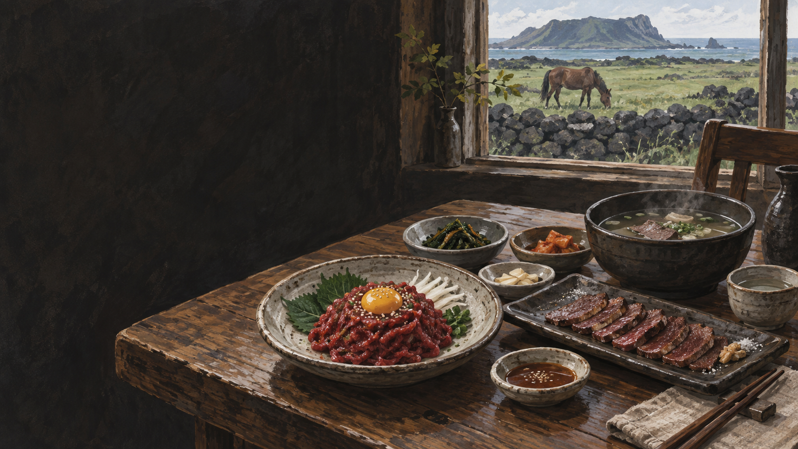

기름이 적은 살
얇게 썰어 결·단맛·탄력을 살핍니다.
 제주에서는 이 재료를
제주에서는 이 재료를
제주 음식의 생활문화를 바탕으로 제작한 기록화 · 생성 이미지
제주의 넓은 목장과 바람 부는 초지는 오랫동안 말 사육의 기반이었습니다. 말은 운송·농사·군사와 목축 경제를 지탱했고, 식용은 그 복합적인 관계 안에서 형성되었습니다.
오늘날 말고기는 육회, 구이, 탕 등으로 나뉩니다. 부위와 숙성에 따라 담백함·철분 향·탄력이 달라지므로 소고기나 돼지고기의 맛으로 단순 환산하기 어렵습니다.
제주에서 말이 맡았던 역할과 식재료로 이어진 배경을 시간의 흐름으로 봅니다.
공동 목장과 중산간에서 말을 길렀습니다.
운송·농경·군마 등 삶의 여러 일을 맡았습니다.
위생적인 도축 뒤 부위별로 나눕니다.
신선도와 부위에 맞춰 육회·구이·탕으로 만듭니다.
말산업과 관광 음식, 지역 식문화가 겹칩니다.
살코기와 지방, 뼈를 서로 다른 조리법과 연결해 살펴봅니다.
얇게 썰어 결·단맛·탄력을 살핍니다.
너무 오래 익히면 질겨질 수 있어 굽기가 중요합니다.
오래 끓여 국물과 부드러운 살을 함께 먹습니다.
유명한 메뉴보다 왜 이런 재료와 방식이 제주 생활에 필요했는지를 먼저 묻습니다.
익숙한 육류를 기준으로 색·지방·식감과 조리법의 차이를 비교합니다.
철분감과 담백한 육향
소는 진한 육향, 돼지는 고소한 지방 향
부위에 따라 적고 단단한 편
부위별 차이가 크고 익숙한 지방감
탄력 있고 결이 선명
소는 부드러운 결, 돼지는 촉촉한 지방
육회·구이·탕
구이·수육·국 등 폭넓음
말고기 문화를 ‘이색 음식’으로만 소개하면 제주 목축의 역사가 지워집니다. 말이 맡았던 노동과 사람의 생계, 오늘의 산업까지 연결해 봐야 합니다.
관광객의 낯섦은 존중하되 선정적인 도전 음식처럼 소비하지 않는 태도가 필요합니다.
말의 고장이라는 말 뒤에는 목장과 노동, 사육과 음식이 겹친 시간이 있습니다.
말고기 식용의 시기와 범위는 시대·자료에 따라 해석이 다를 수 있습니다. 역사 기록과 생산자·조리자 인터뷰를 구분해 표기합니다.
지역·가정·생산자에 따라 설명과 조리법이 다를 수 있습니다. 현장 인터뷰를 인용할 때는 당사자의 사용 동의를 받습니다.